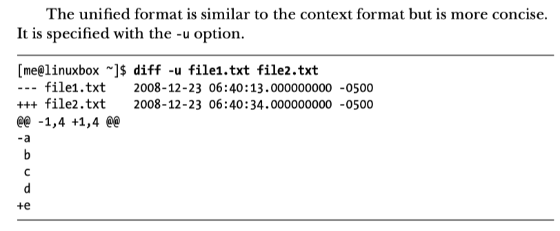
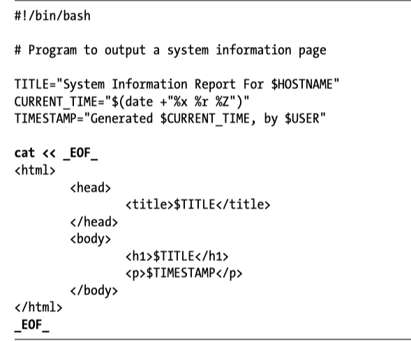
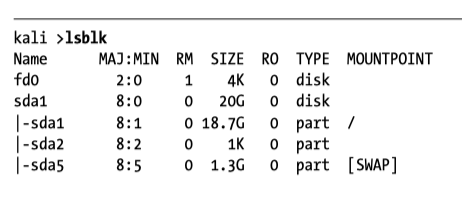

Misc Utilities
import TOCInline from ‘@theme/TOCInline’;
History
- See history with
historycommand - You will get a number for each
historyitem.
- You can replay any number
nwith command!n - History on OS X is stored in
~/.zsh_history
!n refer to command number n in history when you call history
Diff
You can difff two files, you usually want to see a unified diff b/c that is easier to read
diff -u file1.txt file2.txt

Here Documents
Instead of using echo, our script now uses cat and a here document. The string EOF (meaning end of file, a common convention) was selected as the token and marks the end of the embedded text. Note that the token must appear alone and that there must not be trailing spaces on the line.

Unlike Echo, all double quotes and single quotes are escaped. Here is an example of the same thing at the command line.
[me@linuxbox ~]$ foo="some text"
[me@linuxbox ~]$ cat << _EOF_
> $foo
> "$foo"
> '$foo'
> \$foo
> _EOF_
some text
"some text"
'some text'
$fooNamed Pipes with mkfifo
Named pipes are input/output buffers. You can fill up the buffer and then drain the buffer later.
Setup Named Pipe using
mkfifo
Fill up the named pipe, this will hang until the pipe is drained
Hamel: you can run this part in a sub shell

- In a NEW terminal window drain the pipe

Hamel: put it all together in a script. You can drain the pipe as many times as you want.
#!/bin/bash
mkfifo pipe1
ls -l > pipe1 &
cat < pipe1Scan host for open ports w/ nmap
- Lookup ip with
nslookup nmap -sT <IP address>
You can scan a range of IPs for a mysql port like so:
nmap -sT 192.168.181.0/24 -p 3306 -oG MySQLScan
This is useful if you have a public server and you want to verify that a port is open.
Devices /dev
Linux has a special directory that contains files representing attached devices. Important ones are sda1, sda2 , sda3, sdb and sdb1

You can view a tree of your disks and the partitions with the utility lsblk

Mounting devices
Sometimes you need to mount these devices. Two common mount points are /mnt and /media. If you mount the device into an existing directory it will cover the contents of that directory making them invisible and unavailable.
Ex: mount device to /mnt
mount /dev/sb1 /mnt
Ex: mount flash drive
mount /dev/sdc1 /media
You can unmount a device with unmount:
unmount /dev/sb1
Getting information on mounted drives
df -h
Permanently deleting files with shred
This utility writes over files many times in order to erase things. Helpful for sensitive data.
Masking your IP for web scraping
Look into proxy chains
Linux utility called proxychains which generally works as:
proxychains <the command you want proxied> <arguments>
proxychains defaults to using Tor if you don’t supply your own proxies.
See: https://www.technocrazed.com/how-to-use-beagle-scraper-safely-to-scrape-e-commerce-platforms
Running Scripts At System Startup
Look at rc scripts. After the kernel has initialized all its modules, it starts adaemon known as init or initd, which runs scripts found in /etc/init.d/rc
You can use the utility update-rc.d to add a script to the startup procedure:

This is useful if for example you always want to start a database on system startup.